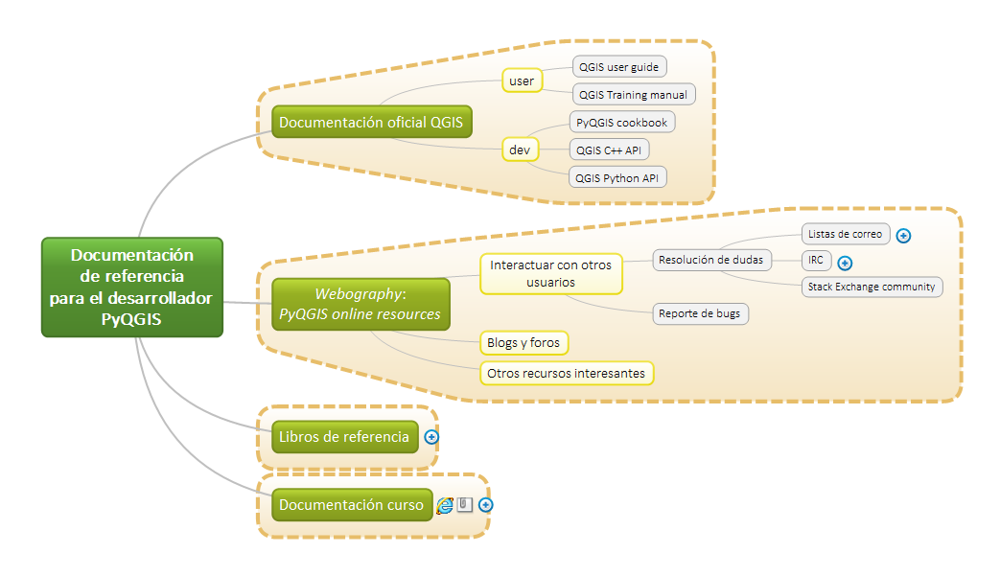

En esta sección se facilitan una serie de recursos para el aprendizaje de QGIS, específicamente orientados a la programación de QGIS con Python.
2.1. Documentación oficial QGIS de referencia¶
La documentación oficial de QGIS se facilita en idioma inglés, pero algunas partes están traducidas a varios idiomas. Las principales referencias para el desarrollador son la API QGIS C++, la API QGIS Python y el libro de recetas para el desarrollador PyQGIS (PyQGIS cookbook). Estos recursos se complementan con la guía de usuario (QGIS User guide) y el manual de aprendizaje (QGIS Training manual).
Note
De forma genérica, los manuales de usuario (user guide) son utilizados para describir las características y funcionalidades disponibles en una determinada aplicación informática y su forma de uso. Los manuales de usuario explican todas las pantallas y campos.
Un manual de aprendizaje (training manual) se redacta de forma diferente y puede estar acompañado de ejercicios para que el usuario los complete. Describen una parte específica del sistema, paso a paso, pero no explican todas las funcionalidades y características de la herramienta informática. Suelen tener más capturas de pantallas que los manuales de usuario.
2.2. PyQGIS online resources (Webography)¶
En este apartado se aportan un conjunto de recursos disponibles en línea de PyQGIS.
2.2.1. Interactuar con otros usuarios¶
Una de las ventajas de los proyectos de código abierto es que se puede hablar directamente con otros desarrolladores y frecuentemente con los desarrolladores principales del proyecto.
2.2.1.1. Resolución de dudas¶
QGIS tiene tres formas oficiales de apoyar el desarrollo y la resolución de problemas. En las listas de correo, canales IRC y redes sociales técnicas se puede obtener soporte de otros usuarios:
Listas de correo: Las listas de correos están divididas por temas y grupos y pueden consultarse desde su registro.
Internet Relay Chat (IRC): para obtener asistencia de usuarios y desarrolladores en tiempo real. Esta ayuda es voluntaria y está condicionada a su disponibilidad. Se puede acceder al canal de QGIS y a su registro correspondiente desde el 10/05/2016.
The Stack Exchange community: Esta red social técnica tiene un subproyecto GIS (Geographic Information Systems Stack Exchange) con 36 etiquetas relacionadas con QGIS y PyQGIS en el siguiente enlace.
2.2.1.2. Reporte de bugs¶
Una manera importante de respaldar el proyecto QGIS, además de financiarlo, es mediante el reporte problemas (solicitudes de nuevas funcionalidades o errores) aportando un caso de uso detallado y los datos que permiten a otros replicar el problema, permitiendo acelerar su corrección. La guía para reportar errores está disponible en el siguiente enlace. Se recomienda consultar las indicaciones antes de reportar un error.
Cada parte del proyecto QGIS tiene un lugar específico donde los problemas se pueden informar, gestionar y discutir, dependiendo del área en la que haya encontrado. A continuación se indican los repositorio adecuados para dirigir las consultas:
Aplicaciones (QGIS Desktop, QGIS Server) -> https://issues.qgis.org/projects/qgis/issues
Sitio web de QGIS -> https://github.com/qgis/QGIS-Website/issues
Documentación QGIS -> https://github.com/qgis/QGIS-Documentation/issues
En el primer caso, para informar de un problema de QGIS o de algún complemento del núcleo es preciso disponer de una cuenta en OSGeo. Para los otros dos casos será necesario disponer de una cuenta de GitHub.
Los enlaces para reportar errores de complementos externos de terceros se pueden localizar en el Administrador de Complementos de QGIS, accesible desde el menú de QGIS.
2.2.2. Blogs y foros¶
A continuación se aporta un listado de Blogs, canales de noticias y foros activos de referencia de interés para el desarrollador:
2.2.2.1. En otros idiomas¶
QGIS.org blog: Blog oficial del proyecto QGIS.
QGIS Plugins Planet: Incluye una lista de múltiples Blogs.
Planet OSGeo: Planet OSGeo es una ventana al mundo, el trabajo y las vidas de los miembros de OSGeo, hackers y colaboradores donde se agregan además Blogs de terceros. Se puede solicitar añadir tu propio Blog este portal.
Blog de OpenGIS: Interesante Blog de los desarrolladores de QGIS para Android y QField para QGIS.
Spatial Galaxy: Blog Gary Sherman, *godfather* de QGIS , sobre GIS open source, QGIS, PyQGIS, Python, programación, etc. en el ámbito geoespacial.
Free and Open Source GIS Ramblings: Blog de Anita Graser, que formó parte del Comité Directivo del Proyecto QGIS y de la Junta Directiva de OSGeo. Tiene numerosas publicaciones de referencia sobre QGIS (1, 2).
Blog Lutra consulting: Blog de Lutra Consulting, empresa que proporciona servicios de consultoría, migración, desarrollo de software, capacitación y soporte comercial para QGIS y otros proyectos SIG de código abierto.
Blog Kartoza: Blog de Tim Sutton, miembro honorario del Comité Directivo del Proyecto QGIS. Anterior Linfiniti Geo Blog.
Blog Oslandia: Blog de Oslandia, empresa privada creada por expertos en SIG y datos espaciales.
Blog de Nayall Dawson: Blog de otro miembro honorable con voto del Comité Directivo de QGIS.
2.2.2.2. En castellano¶
Blog de mappingGIS: Completo Blog que contiene numerosas entradas relacionadas con la difusión de las Tecnologías de la Información Geográfica. Permanentemente actualizado.
El Blog de José Guerrero: Especialmente dedicado a GNU/Linux, código Python y Sistemas de Información Geográfica (SIG). En su nube de categorías tiene mucho peso la etiqueta
PyQGIS.Foro de QGIS en castellano: Foro de QGIS en castellano.
Blog de GeoTux: Soluciones geoinformáticas libres. Geo-noticias, geo-blogs y geo-foros.
El blog de Franz: Con un interesante apartado de preguntas y respuestas. Muy orientado a ArcGIS.
2.2.3. Otros recursos interesantes¶
QGIS Python Plugins Repository: Repositorio de plugins de QGIS. Recurso recomendado para el estudio del código de otros desarrolladores.
Tip
El tipo de licencia de QGIS permite inspeccionar el código fuente de los complementos, constituyéndose como un recurso imprescindible y recomendado para el aprendizaje de estas herramientas: “La mejor escuela es instalar y leer el código de plugins”.
Grupo de usuarios de QGIS España: Soporte para el grupo de usuarios Españoles de QGIS.
QGIS Visual Changelog: Registro visual de cambios desde la versión QGIS 2.0.
QGIS tutorials and tips: Blog de Ujaval Gandhi. Ver Python Scripting (PyQGIS).
Plugins comentados: Una colección de versiones ampliamente comentadas de ciertos complementos de QGIS, para que puedan leerse y servir como una herramienta de aprendizaje. Se puede buscar una versión en vivo de ese sitio web aquí.
Visual Style Guide: Guía de estilo visual de QGIS con la imagen de QGIS.
2.3. Libros de referencia¶
QGIS facilita en su sitio Web una lista de libros de otros editores, que no administra y se ofrecen sólo como ayuda.
Por su parte, la editorial Locate Press, especializada en libros geoespaciales de código abierto, publica varios libros que son referencia en QGIS. Específicos de programación para QGIS se destacan los siguientes: 3, 4
Finalmente, la editorial Packt Publishing, especializada en la publicación de recursos de aprendizaje de proyectos de código abierto, contiene numerosos libros y video tutoriales sobre QGIS de nivel usuario hasta nivel experto programador. En este caso se recomiendan los siguientes: 5, 6
- 1
A. Graser, Learning QGIS - Third Edition, 3rd Revised edition edition (Packt Publishing - ebooks Account, Birmingham Mumbai, 2016)
- 2
A. Graser, G. N. Peterson, and G. Sherman, QGIS Map Design (2018)
- 3
G. Sherman, The PyQGIS Programmer’s Guide: Extending QGIS 3 with Python 3 (Locate Press, 2018)
- 4
T. Mitchell, Geospatial Power Tools: GDAL Raster & Vector Commands; (Locate Press, Chugiak, AK, 2014)
- 5
S. Islam, S. Miles, G. Menke, G. Smith, L. Pirelli, G. Van Hoesen, and an O. M. C. Safari, Mastering Geospatial Development with QGIS 3.x - Third Edition (Packt Publishing, 2019)
- 6
B. Mearns, A. Mandel, A. Bruy, V. Olaya, and A. Graser, QGIS: Becoming a GIS Power User (Packt Publishing, Birmingham, 2017).